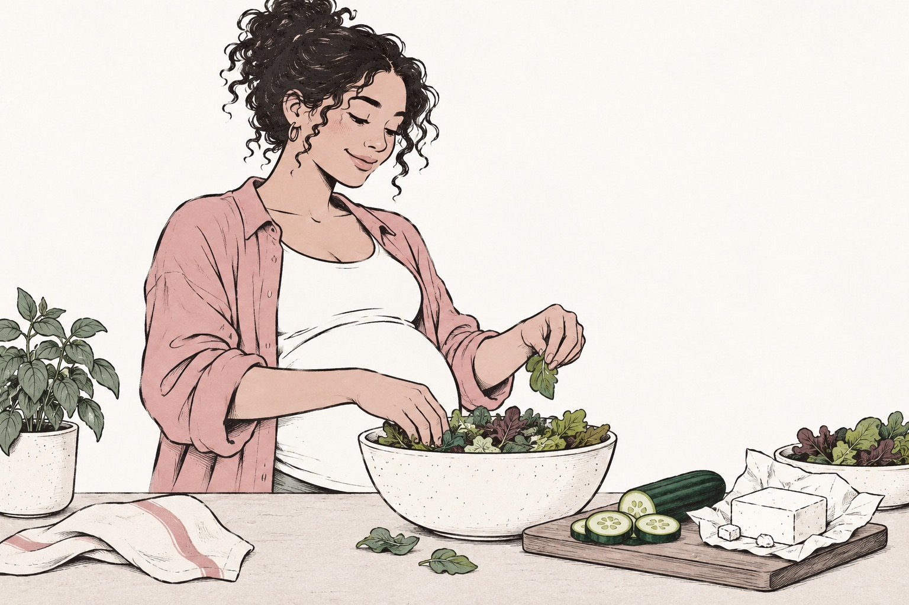

Salads During Pregnancy: Leaves, Toppings and Storage
Check salad leaves, dressings, toppings and cold storage during pregnancy without relying on a healthy menu label.
A bowl of leaves can come with more questions than a cooked dinner. You can include salads during pregnancy, but washing, toppings and cold storage matter. A “healthy” menu label does not describe how the vegetables were handled. The FDA produce guide and CDC pregnancy table provide a better starting point.

Start with the leaves
Choose fresh produce in good condition and follow its washing instructions. For loose produce, rinse under running water. For a bag labeled washed or ready to eat, follow the manufacturer's directions; unnecessary extra handling can introduce contamination.
At a restaurant, ask how the salad is prepared if you need clarification. A clean-looking leaf cannot reveal its storage or handling history. You do not have to infer that history from the venue's reputation or how busy the lunch queue is.
The toppings can change the answer
Check cheese type and pasteurization, raw sprouts, egg preparation and any seafood or meat. A cooked chicken topping still needs proper cooking and storage; a soft cheese needs more information than a crumbly texture. Use a short ingredient list you understand when the menu is vague.
Raw sprouts are a separate issue from ordinary washed leaves. Their growing conditions can allow germs inside the sprout, where rinsing is not enough. Ask for them to be omitted or thoroughly cooked. A salad described as “all vegetables” can still include them.
Dressing deserves one question
Some house-made dressings contain uncooked egg. Ask whether pasteurized egg was used when there is no safe cooking step. A bottle from a manufacturer and a kitchen's fresh recipe are different products. Our Caesar salad guide makes that question easier to phrase.
For allergies, check the ingredients and cross contact separately. Sesame, nuts, dairy and egg may appear in dressings or garnishes. A photo can miss a spoonful of sauce that changes whether the meal fits your needs.
Do not let the lunch bowl become an afternoon bowl
Keep a salad with perishable ingredients cold until you eat it. If preparing ahead, store components appropriately and follow the shortest relevant storage instructions. Taking a container out of the fridge at breakfast does not mean it can spend the day on your desk.
The FDA washing tips explain practical produce cleaning without soap or special produce washes. Make those habits ordinary rather than building a complicated sanitizing ritual around every meal.
An easier salad routine
Use washed vegetables, a clearly understood topping and a dressing with known ingredients. Pack only what you will eat and provide suitable refrigeration at work. Embryly can help organize the ingredient questions, while the label and preparation tell you what a photograph cannot. The goal is a lunch you can enjoy, with the important details settled before the first forkful.